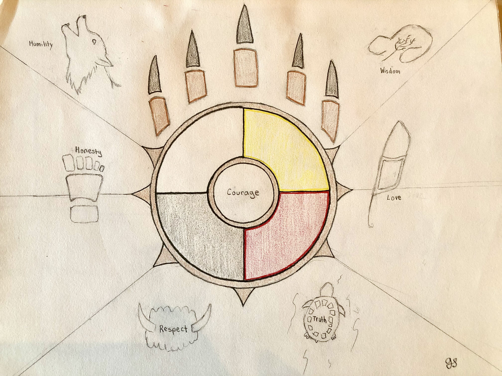
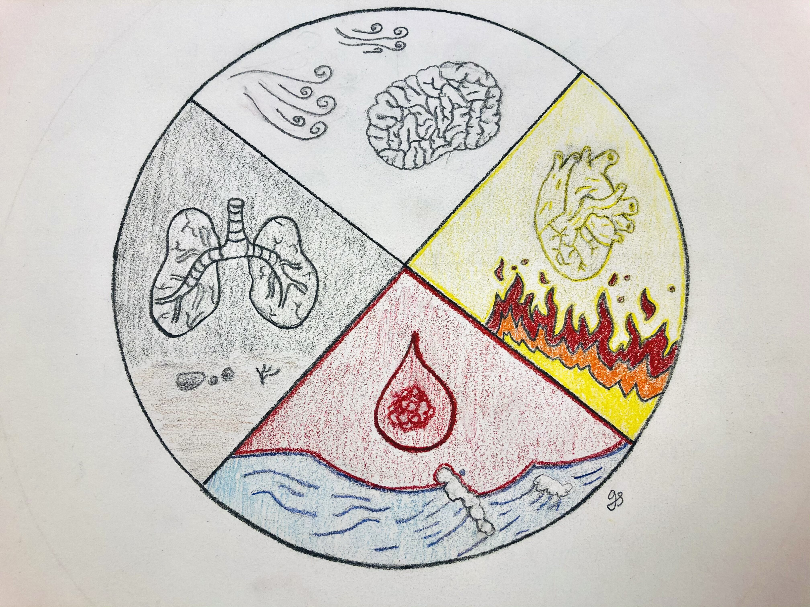
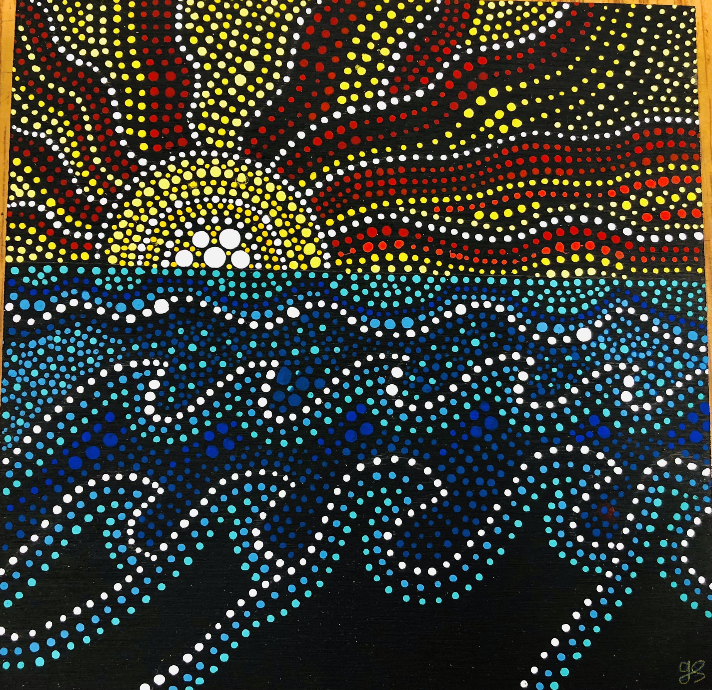
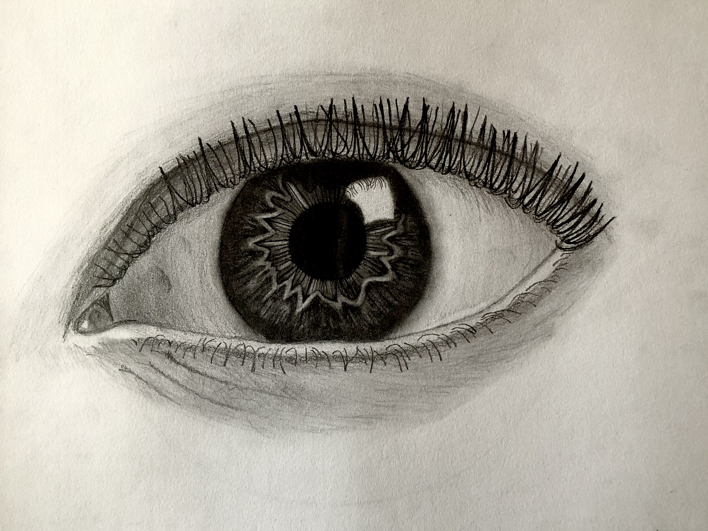

The medicine wheel is a symbol that is extremely sacred and important to the indigenous culture and life. It is connected to the spiritual and healing practices of the indigenous people.
 The medicine wheel is shaped as a circle to help represent the endless circle of life.
The dot painting is very important to The Metis People and their culture. For them, the art represents a story and has sacred meanings behind it. Some even have traditional indigenous symbols embedded into the cross hatching painting
The basics of Tonal value drawing is giving a shape an illusion of a form and depth. Drawing that contains a limited value range can generally end up looking flat, while drawings with a wider value range will pop.
